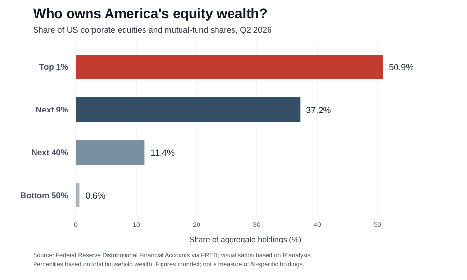

China's enthusiasm for artificial-intelligence shares has met an expensive reality. By late October its STAR50 index, which includes chipmakers and other technology firms, had fallen 40% in less than four months. Some $480bn in market value had vanished, according to Reuters. This does not mean AI has failed. Investors may simply have paid too much for the profits they expected it to generate. The question is what happens when the same disappointment strikes a market that helps support household spending.
America has a good deal riding on rising shares. The Bank of England estimated that equity-price gains accounted for roughly a tenth of the increase in real American consumption since the beginning of 2024, with AI-related stocks the main driver. Households whose portfolios rise can feel able to spend more or save less, even without higher wages. Falling valuations could reverse some of that support.
Yet the losses would not be evenly shared. Federal Reserve figures show that the wealthiest 10% of Americans owned 88.1% of corporate equities and mutual-fund shares in the second quarter of 2026; the bottom half owned just 0.6% (see chart). Wealthy households tend to spend a smaller share of additional wealth. A trillion dollars lost in the stockmarket would not translate into a trillion-dollar fall in consumption.

China provides a partial counterexample to the idea that every equity crash becomes a banking crisis. Its sell-off has hit shareholders, including retail investors, without clear evidence so far of a systemic banking collapse caused by it. But it is too early to claim that the damage stops at investors. Reuters reports that falling technology valuations are also discouraging new listings and fundraising. The effects on spending and investment may take longer to emerge.
America's more consequential vulnerability could lie in the financing of AI infrastructure. Companies are committing vast sums to data centres, semiconductors and electricity supply. Some are also funding their own future customers. The Bank for International Settlements found that 46.4% of the value of AI-to-AI investment deals in 2021–25 also involved a commercial supply-chain relationship. A supplier can invest in a developer, which then uses that money to buy the supplier's computing capacity. The transactions are real, but demand becomes partly dependent on continued financing.
The obligations can go further. In August Nvidia disclosed conditional guarantees capped at $105bn relating to leases at an Ohio data-centre project where OpenAI is the tenant. These are not $105bn of immediately outstanding loans. They backstop specified lease-related shortfalls following defined tenant defaults, with exposure arising in phases as facilities enter service. Such commitments can make a project easier to finance while transferring some of the risk to the guarantor.
If AI revenues disappoint, several pressures could arrive together: share prices fall, investment projects are delayed, borrowers struggle to refinance and guarantees are tested. That would carry losses beyond shareholders into suppliers and credit markets. It is a risk, not an established crisis. The BIS found that spillovers from AI-financing announcements into broader bond markets had so far been small and short-lived.
China's recent correction shows that a spectacular fall in valuations need not immediately destabilise the wider financial system. An American downturn would be more serious if declining household wealth coincided with the unwinding of debt-financed investment. The danger is less the loss of paper wealth alone than the possibility that the same optimistic forecast is supporting consumption, corporate revenues and credit at once.